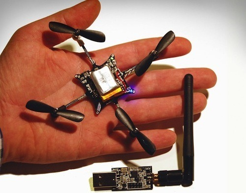

Full Stack Developers: Renaissance Men of The 21st Century
Originally published at https://singularityhacker.com/full-stack-developers-renaissance-men-of-the-21st
Many powerful groups in this country are surprised that technology continues to shrink in size and cost while expanding in capabilities and power. These groups are either deluded into thinking that the next 100 years will be similar to the previous 100 years or they have a special interest in maintaining the status quo so they appose the coming changes.
\1. Eric Schmidt thinks we can globally police autonomous aerial vehicles.
“You’re having a dispute with your neighbor,“ he hypothesized. “How would you feel if your neighbor went over and bought a commercial observation drone that they can launch from their back yard. It just flies over your house all day. How would you feel about it?” - Eric Schmidt
Get a grip. That time is already here. The same could be said of all the advances in a/v recording technology as well.

\2. The State Department thinks they can suddenly control file sharing and 3D printing with it’s recent demands to have the Liberator 3D printed gun files removed from the creators servers. Not a chance. The orinal Liberator 3D model was downloaded 100,000 times within days of its posting and is still just as available today on PirateBay. Surprisingly, Kim Dotcom seems just as flabbergasted about the arrival of the Liberator gun. Technologist should know better.
\3. North Carolina is specifically targeting Tesla Motors with a bill that would require car manufacturers to exclusively sell through dealerships. This would be like a state freaking out over the emergence of e-commerce so they pass a bill requiring a ‘store’ to have a brick & mortar location.
Many more examples could be given, ahem Uber. The point is this. If you have an interest in maintaining the status quo, get ready for future shock. IBM’s Watson will be a children’s toy within fifteen years. Any business plan or legislative action that doesn’t take this into account is destined to be ineffective and outmoded.